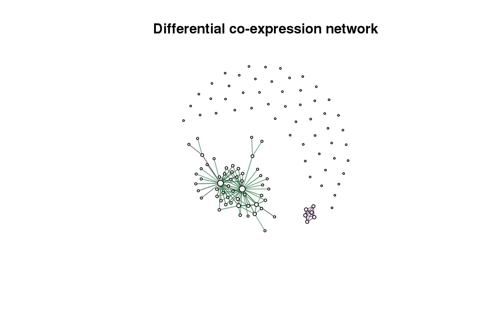

Methods and an evaluation framework for the inference of differential co-expression/association networks.
Download the package from Bioconductor
if (!requireNamespace("BiocManager", quietly = TRUE))
install.packages("BiocManager")
BiocManager::install("dcanr")Or install the development version of the package from Github.
BiocManager::install("DavisLaboratory/dcanr")Load the installed package into an R session.
This example shows how a differential network can be derived. Simulated data within the package is used.
#load simulated data
data(sim102)
#get expression data and conditions for 'UME6' knock-down
simdata <- getSimData(sim102, cond.name = 'UME6', full = FALSE)
emat <- simdata$emat
ume6_kd <- simdata$condition
#apply the z-score method with Spearman correlations
z_scores <- dcScore(emat, ume6_kd, dc.method = 'zscore', cor.method = 'spearman')
#perform a statistical test: the z-test is selected automatically
raw_p <- dcTest(z_scores, emat, ume6_kd)
#adjust p-values (raw p-values from dcTest should NOT be modified)
adj_p <- dcAdjust(raw_p, f = p.adjust, method = 'fdr')
#get the differential network
dcnet <- dcNetwork(z_scores, adj_p)
#> Warning in dcNetwork(z_scores, adj_p): default thresholds being selected
plot(dcnet, vertex.label = '', main = 'Differential co-expression network')
Edges in the differential network are coloured based on the score (negative to positive represented from purple to green respectively).